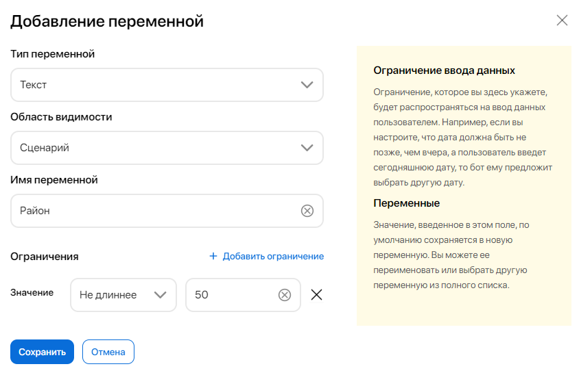
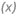

Переменные бота хранят в себе информацию, которую вы передаёте или запрашиваете у пользователя во время выполнения сценария. Для создания переменных и получения данных служат элементы групп Запрос данных и ELMA365, а также элементы Вопрос. Текст + кнопки и Вопрос. Ввод текста, а также триггер Внешнее событие. В этих же компонентах можно ознакомиться с полным списком переменных, добавленных в бота.
Переменные могут создаваться с различными уровнями видимости. Например, можно добавить переменную, которая будет доступна только в конкретном сценарии или же во всех настроенных сценариях бота сразу.
Каждую переменную после создания можно использовать в скриптах или других элементах. Так, например, можно сохранить имя пользователя в переменную, чтобы бот смог обратиться к нему в беседе.
Типы переменных
Для хранения данных в сценариях бота используются простые и сложные переменные. К простым типам относятся: Текст, Число, Да/Нет, Дата и ФИО. К сложным относятся переменные Объект и Пользователь, поскольку они содержат сразу несколько свойств.
Переменная типа Объект используется, когда в ходе отработки сценария нужно получить данные из ELMA365, например, элемент приложения. Также переменные такого типа можно использовать в скриптах или в обработчиках событий.
Переменная типа Пользователь добавлена в список переменных бота по умолчанию. Её нельзя создать или настроить самостоятельно. В этой переменной находятся свойства, которые проверяются в начале диалога с клиентом:
- Аутентифицирован — в этом поле хранится информация о наличии записи о клиенте в справочнике Пользователи или Внешние пользователи;
- ФИО — если пользователь записан в справочнике, в это поле автоматически запишется его имя.
Добавление переменных
Переменные создаются:
- для элементов Создание элемента приложения и Запуск бизнес-процесса — чтобы передавать данные в контекст приложения или процесса;
- для остальных элементов группы ELMA365, всех элементов группы Запрос данных, а также элементов Вопрос. Текст + кнопки, Вопрос. Ввод текста — чтобы записывать информацию из ответов пользователя;
- для триггера Внешнее событие — чтобы сохранять данные, которые передаются в запросе при активации события.
Разместите один из перечисленных компонентов на схеме сценария. Далее действия различаются в зависимости от типа компонента:
- Для элементов Создание элемента приложения и Запуск бизнес-процесса:
- Наведите курсор на блок, затем на три точки рядом с его названием, нажмите значок шестерёнки.
- В окне настроек выберите приложение или бизнес-процесс. Вы увидите таблицу соответствия свойств приложения или процесса и переменных бота.
- Напротив свойства нажмите Выбрать переменную, затем + Создать новую переменную.
- Для других элементов группы ELMA365, а также для группы Запрос данных и элементов Вопрос. Текст + кнопки, Вопрос. Ввод текста:
- В блоке в поле Ответ пользователя нажмите Добавить.
- Из выпадающего списка выберите + Создать новую переменную.
- Для триггера Внешнее событие:
- Наведите курсор на триггер на схеме, затем на три точки, нажмите значок шестерёнки.
- В окне настроек нажмите Добавить переменную и выберите + Создать новую переменную.

Настройки переменной
В открывшемся окне заполните поля:

- Тип переменной — выберите тип переменной в зависимости от вида сохраняемых данных. Например, если вы хотите уточнить имя пользователя, укажите тип ФИО. Обратите внимание, для таких элементов из группы Запрос данных, как Телефон, Email, Ссылка, Местоположение, используются переменные типа Текст;
- Область видимости — укажите область, в которой будет применяться и храниться переменная. Переменные можно сохранить на следующих уровнях:
- Сценарий — значение переменной хранится в конкретном сценарии и становится пустым после его выполнения. В дальнейшем при взаимодействии с ботом по этому сценарию пользователь снова уточняет значение этой переменной. Например, бот запрашивает даты отпуска при каждом обращении пользователя;
- Бот — значение переменной хранится во всех сценариях бота в рамках одной сессии взаимодействия пользователя с ботом;
- Пользователь — значение переменной сохранится для пользователя в рамках каждого взаимодействия с ботом. Например, бот может запомнить имя пользователя, чтобы не уточнять его повторно при каждом обращении;
- Сеанс — область доступна только для типа Пользователь. Значение переменной будет храниться во всех сценариях бота в рамках одной сессии взаимодействия с пользователем.
- Имя переменной — название рекомендуется давать в соответствии с назначением переменной и использовать существительные, например Дата рождения, Количество гостей и т. д.;
- Ограничения — настройте требования к ответу пользователя. Если ответ не будет соответствовать заданным значениям, бот запросит информацию ещё раз. Добавить ограничения можно только для переменных типа Текст, Дата, Число.
Чтобы создать ограничение, нажмите кнопку + Добавить ограничение и задайте его значение, выбрав условие из выпадающего списка:
- Равно — введённый текст должен совпадать с указанным значением. Для типов переменных Текст, Дата, Число;
- Не равно — введённый текст не должен совпадать с указанным значением. Для типов переменных Текст, Дата, Число;
- Длиннее — количество символов введённого текста должно быть больше указанного значения. Для типа Текст;
- Не короче — количество символов введённого текста должно быть больше или равно указанному значению. Для типа Текст;
- Короче — количество символов введённого текста должно быть меньше указанного значения. Для типа Текст;
- Не длиннее — количество символов введённого текста должно быть меньше или равно указанному значению. Для типа Текст;
- Больше — введённое число должно быть больше указанного значения. Для типа Число;
- Больше или равно — введённое число должно быть больше или совпадать с указанным значением. Для типа Число;
- Меньше — введённое число должно быть меньше указанного значения. Для типа Число;
- Меньше или равно — введённое число должно быть меньше или совпадать с указанным значением. Для типа Число;
- Позже — введённая дата наступает позже указанного значения. Для типа Дата/Время;
- Не раньше — введённая дата наступает позже или в указанное значение. Для типа Дата/Время;
- Раньше — введённая дата наступает раньше указанного значения. Для типа Дата/Время;
- Не позже — введённая дата наступает раньше или в указанное значение. Для типа Дата/Время;
- Дата и время — проверяется, что введённый текст является датой и временем. Для типа Дата/Время;
- Дата — проверяется, что введённый текст является датой. Для типа Дата/Время;
- Время — проверяется, что введённый текст является временем. Для типа Дата/Время.
Например, для переменной типа Текст вы можете задать ограничение количества символов в ответе пользователя. Для этого из выпадающего списка выберите условие Не длиннее и укажите число, например, 50.
Или же добавьте ограничение для переменной типа Дата, например, чтобы пользователь не смог оформить отгул на уже прошедшее число. Для этого выберите условие Не раньше и задайте текущую дату в календаре.
После завершения настройки нажмите Сохранить.
Теперь данные можно сохранять в переменных бота, обрабатывать или передавать пользователю.
Работа с переменными
Вы можете посмотреть список всех переменных, используемых в сценарии, и изменить их настройки. Для этого в компоненте, в котором используется переменная, нажмите на её название. В выпадающем списке выберите пункт Настроить переменные. Откроется окно со списком всех добавленных в сценарий переменных.
В этом окне вы можете:
- добавить переменную, нажав на кнопку Создать новую переменную;
- отсортировать переменные по их типу. Для этого на верхней панели нажмите Все и выберите нужный тип в выпадающем списке;
- искать переменные по названию в строке поиска на верхней панели;
- отредактировать настройки существующих переменных. Для этого выделите запись в списке и нажмите кнопку Настроить. В открывшемся окне вы можете изменить имя, тип и область переменной, а также добавить или удалить ограничения. Затем сохраните настройки.
Использование переменных
В сценариях переменные можно использовать в любых сообщениях бота, а также при написании скриптов.
Чтобы обратиться к переменной в сообщении, при настройке элемента нажмите значок  и выберите переменную в открывшемся окне.
Например, в начале сценария Заказ техники бот запрашивает детали заявки с помощью элементов Вопрос. Ввод текста. Полученная от пользователя информация записывается в переменные сценария.
Перед завершением разговора вы можете добавить Сообщение чат‑бота, в котором в виде переменных будут выводиться все запрошенные данные. Пользователь сможет проверить их правильность и подтвердить свой заказ.
Также переменные необходимы для написания скриптов, с помощью которых можно расширить функциональные возможности бота. Подробнее об этом читайте в статьях «Скрипт» и «Редактор сценариев бота».